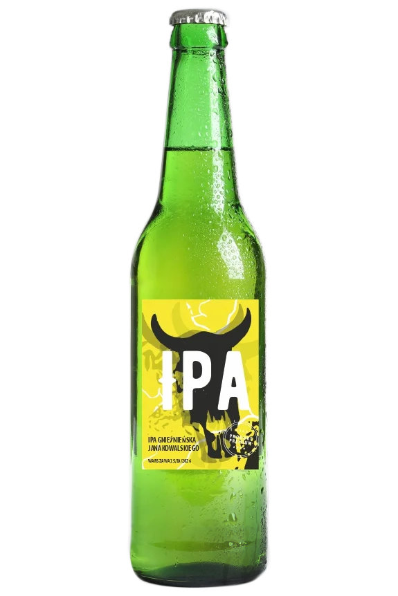

Top 3

Piwa Bezalkoholowe

Piwa Standardowe


Zgodnie z polskim prawem piwo bezalkoholowe to piwo, w którym zawartość alkoholu nie przekracza 0,5% całkowitej objętości. Dla porównania: najpopularniejsze gatunki piw alkoholowych mają od 4 do 6% alkoholu.
Piwa bezalkoholowe są warzone w tradycyjny sposób, tyle że w ściśle określonym momencie fermentacja jest przerywana, przez co nie dopuszcza się do wytworzenia alkoholu. Pozwala to zachować w piwie bezalkoholowym wszystkie pozostałe związki, które występują w ich alkoholowych odpowiednikach oraz smak
Piwo jest napojem alkoholowym otrzymywanym w wyniku fermentacji roztworu (brzeczki) przygotowanego ze słodowanego jęczmienia lub pszenicy, wody i (zazwyczaj) chmielu. Do przygotowania roztworu (brzeczki) mogą być również używane pewne ilości niesłodowanych zbóż (np. ziarno kukurydzy lub ryż).
Piwo kraftowe , a inaczej piwo rzemieślnicze to produkt wytwarzany w małych i niezależnych od kapitału korporacyjnego browarach. Cechą, która odróżnia piwo kraftowe i piwo rzemieślnicze od innych jest fakt, iż piwowar, często również właściciel, jest znany klientom końcowym z imienia i nazwiska.